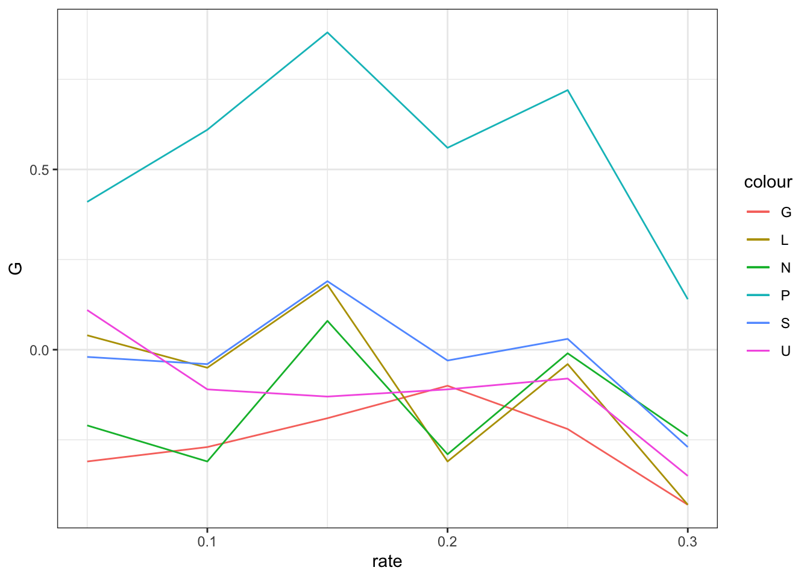
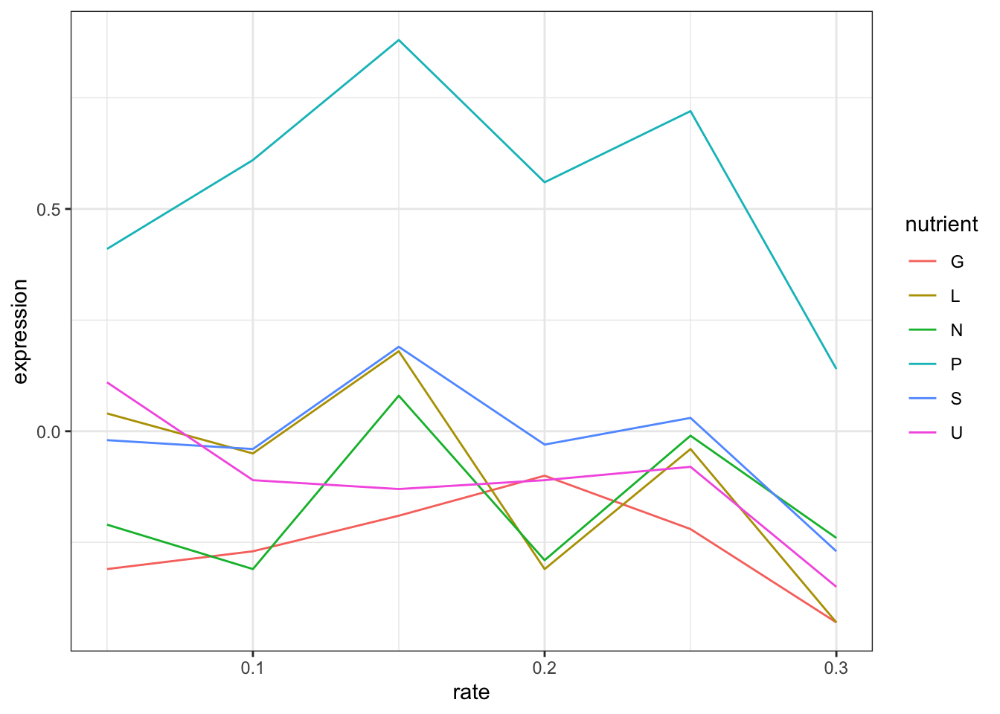
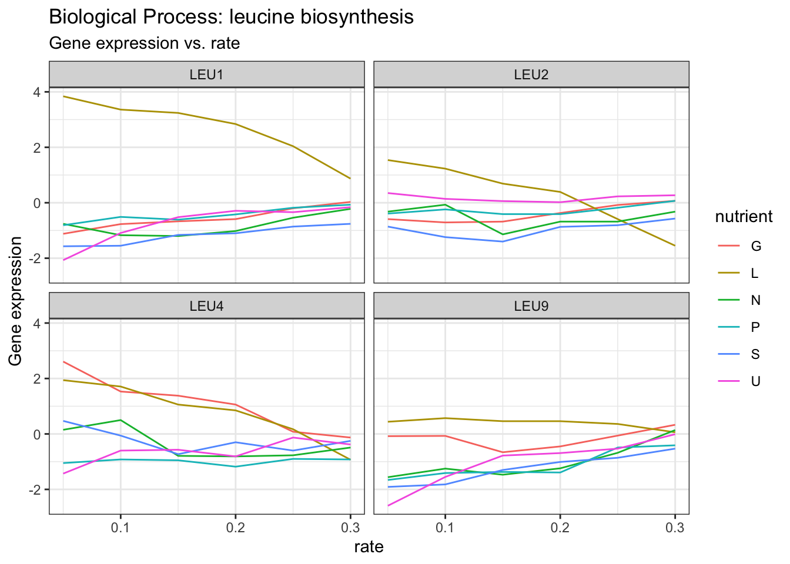

| GID | rate | G | N | P | S | L | U |
|---|---|---|---|---|---|---|---|
| GENE2922X | 0.05 | -0.31 | -0.21 | 0.41 | -0.02 | 0.04 | 0.11 |
| GENE2922X | 0.10 | -0.27 | -0.31 | 0.61 | -0.04 | -0.05 | -0.11 |
| GENE2922X | 0.15 | -0.19 | 0.08 | 0.88 | 0.19 | 0.18 | -0.13 |
| GENE2922X | 0.20 | -0.10 | -0.29 | 0.56 | -0.03 | -0.31 | -0.11 |
| GENE2922X | 0.25 | -0.22 | -0.01 | 0.72 | 0.03 | -0.04 | -0.08 |
| GENE2922X | 0.30 | -0.43 | -0.24 | 0.14 | -0.27 | -0.43 | -0.35 |
Munging for data visualization
A DSAN 5200 Laboratory
Instructions
This laboratory explores data munging for data visualization and the utility of tidy data in data visualization toolkits. It will consist of a demonstration done in class, and an assignment that must be submitted for grade and completion. All submissions will be via GitHub Classroom.
- The assignment portion must be done in a fresh Quarto notebook named in the format “l1-[last name]-[first name]-wrangling.qmd”. You may use either R or Python to complete the assignment in this notebook.
- If using R, you must use the
ggplot2package for visualization, and thetidyversepackages for data munging. - If using Python, you must use the
matplotliband/orseabornpackages for visualization, andpandasfor data munging.
- The final submission will be denoted by a git commit with the commit message
final submission. This will be what is evaluated for grade. This must include:
- The file
l1-[lastname]-[firstname]-wrangling.qmdwithlastnameandfirstnamereplaced with your last and first name, respectively. l1-image.png, created in your Quarto notebookcleaned_data.csv, which contains the final munged data that is used for generatingl1-image.png. This must be in tidy format.
Demonstration
The dataset we will be demostrating today is an extract from a gene expression dataset generated in a series of yeast experiments Brauer, 2008, where yeast were starved of certain nutrients to see how their gene expression changed. Basically, if you give yeast plenty of nutrients (a rich media), except that you sharply restrict its supply of one nutrient, you can control the growth rate to whatever level you desire (we do this with a tool called a chemostat). For example, you could limit the yeast’s supply of glucose (sugar, which the cell metabolizes to get energy and carbon), of leucine (an essential amino acid), or of ammonium (a source of nitrogen).
“Starving” the yeast of these nutrients lets us find genes that:
- Raise or lower their activity in response to growth rate. Growth-rate dependent expression patterns can tell us a lot about cell cycle control, and how the cell responds to stress.
- Respond differently when different nutrients are being limited. These genes may be involved in the transport or metabolism of those nutrients.
This data looks at six nutrients, denoted G, L, N, P, S, and U (think of these as categories). Under each column is the gene expression for a particular gene, as the rate at which the yeast was starved changes (rate).
What we’d like to see is, for this gene, how the gene expression changes with the rate. We’d like to see something like this:

To do this, we need to get the data into a tidy format.
Tidy data is defined by
- Each variable forms a column.
- Each observation forms a row.
- Each type of observational unit forms a table.
For any of the toolkits we’ll be using for this lab (ggplot2/matplotlib/seaborn), we need to get the data into a tidy format. How do I know this?
- All of them demand that particular columns be used for particular things. For example, in ggplot2, the
xandyaesthetics are used for the x and y coordinates of the plot. - This means that values in a column determine those visual attributes (we’ll call these visual encodings later).
Can we do this using non-tidy data?
Sure, we can, but it’s much more painful and doesn’t use the capabilities or syntactical sugar that is built into the toolkits.
ggplot(cleaned_data, aes(x = rate)) +
geom_line(aes(y = G, color = "G")) +
geom_line(aes(y = L, color = "L")) +
geom_line(aes(y = N, color = "N")) +
geom_line(aes(y = P, color = "P")) +
geom_line(aes(y = S, color = "S")) +
geom_line(aes(y = U, color = "U")) +
theme_bw()
Using tidy data
However, if we munge the data into a tidy format, we can do this much more easily.
What do we need to do to make this data tidy?
cleaned_data_munged <- cleaned_data |>
pivot_longer(cols = -c(rate, GID),
names_to = "nutrient", values_to = "expression")| GID | rate | nutrient | expression |
|---|---|---|---|
| GENE2922X | 0.05 | G | -0.31 |
| GENE2922X | 0.05 | N | -0.21 |
| GENE2922X | 0.05 | P | 0.41 |
| GENE2922X | 0.05 | S | -0.02 |
| GENE2922X | 0.05 | L | 0.04 |
| GENE2922X | 0.05 | U | 0.11 |
| GENE2922X | 0.10 | G | -0.27 |
| GENE2922X | 0.10 | N | -0.31 |
| GENE2922X | 0.10 | P | 0.61 |
| GENE2922X | 0.10 | S | -0.04 |
| GENE2922X | 0.10 | L | -0.05 |
| GENE2922X | 0.10 | U | -0.11 |
| GENE2922X | 0.15 | G | -0.19 |
| GENE2922X | 0.15 | N | 0.08 |
| GENE2922X | 0.15 | P | 0.88 |
| GENE2922X | 0.15 | S | 0.19 |
| GENE2922X | 0.15 | L | 0.18 |
| GENE2922X | 0.15 | U | -0.13 |
| GENE2922X | 0.20 | G | -0.10 |
| GENE2922X | 0.20 | N | -0.29 |
| GENE2922X | 0.20 | P | 0.56 |
| GENE2922X | 0.20 | S | -0.03 |
| GENE2922X | 0.20 | L | -0.31 |
| GENE2922X | 0.20 | U | -0.11 |
| GENE2922X | 0.25 | G | -0.22 |
| GENE2922X | 0.25 | N | -0.01 |
| GENE2922X | 0.25 | P | 0.72 |
| GENE2922X | 0.25 | S | 0.03 |
| GENE2922X | 0.25 | L | -0.04 |
| GENE2922X | 0.25 | U | -0.08 |
| GENE2922X | 0.30 | G | -0.43 |
| GENE2922X | 0.30 | N | -0.24 |
| GENE2922X | 0.30 | P | 0.14 |
| GENE2922X | 0.30 | S | -0.27 |
| GENE2922X | 0.30 | L | -0.43 |
| GENE2922X | 0.30 | U | -0.35 |
ggplot(cleaned_data_munged, aes(rate, expression, color = nutrient)) +
geom_line() +
theme_bw()
Tidy data
Typical problems to be fixed
- Column headers are values, not variable names.
- Multiple variables are stored in one column.
- Variables are stored in both rows and columns.
- Multiple types of observational units are stored in the same table.
- A single observational unit is stored in multiple tables.
Tidy data is a conceptual framework to structure data in a consistent, analyses-friendly manner. It helps identify ways in which data are not tidy.
The crucial question for a particular study is: what is a variable and what is an observational unit. For example, your data consists of hospitalizations across a healthcare network.
- If you’re interested in comparing hospitals, the hospital is the observational unit.
- If you’re interested in readmissions, then the patient is the unit of observation.
- If you’re interested in treatment and care, then the hospital visit is the unit of observation
Tools for tidying data
The main tools you need for tidying data are:
- pivoting (
pivot_longerandpivot_wider, ormeltandpivotinpandas) - separating a single column into multiple columns (
separateintidyr, orstr.splitinpandas) - combining multiple columns into a single column (
uniteintidyr, orstr.joininpandas) - split-apply-combine (
group_byandsummarizeindplyr, orgroupbyandagginpandas)
You really need to know these tools really well in order to do data science proficiently.
The Assignment
There is a file in the data directory called raw.csv. This is the full dataset from which the demonstration is derived, and comprises the same sort of data for multiple genes. It includes metadata about the genes, stored in the NAME column. Data in this column is of the format
<gene name > || <biological process> || <molecular function> || <systematic
name>Tasks
- Munge the data into a tidy format and save it as
cleaned_data.csv. This will involve:
- Separating the
NAMEcolumn into multiple columns (namedgene_name,biological_process,molecular_function, andsystematic_name). - Pivoting the data so that the column names
G,L,N,P,S, andUare in a single column, and the values are in another column (expression).
- Create the following visualization and save it as
l1-image.png.
- If you’re doing this in Python, I strongly suggest using
seabornfor this. You may get slightly different names for the panels, but that will be alright
